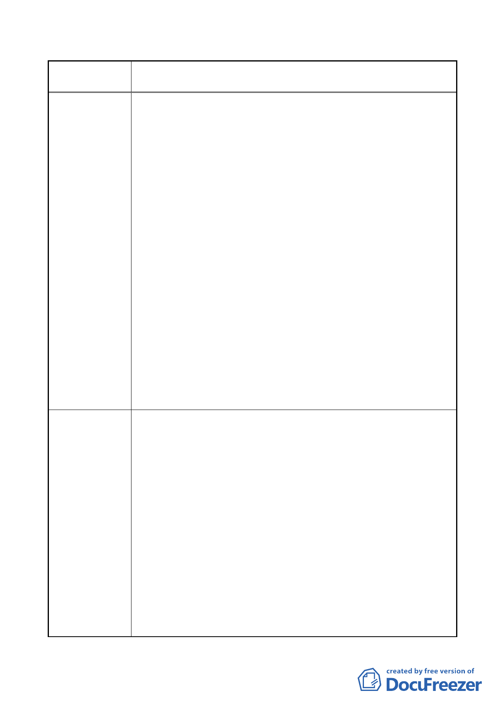

案名
市府回應說明
變更臺北市內湖區石潭段四小段 280、281、281-1 地號等三筆
土地國中、國小用地為體育場用地及道路用地主要計畫案
間取消路邊停車格，禁停小客車。
（2）請調整臨民權束路 6 段 206 巷戶外練習場位置，以供小客
車及機車等由 206 巷 58 號前方交又口進入網球中心停車
場。
（3）網球中心基地東西兩側 206 巷巷口及 210 巷巷口出場之車
輛，只能右轉，無法左轉，皆須往東行駛後再迴轉，增加
主線車流，請檢討進出動線，如何分散車流。
（4）提撥經費，徵收巷道，改善交通，疏解車流，節能減碳，
請打通下列巷道：
A.民權東路 6 段 210 巷底計畫道路。
B.民權東路 6 段 180 巷 42 弄通往成功路 2 段之巷道，可
快速進入高速公路及市區，大幅減輕內湖地區及民權東
路 6 段之車流，對改善交通助益甚大。
2.網球中心噪音及光害部份
（1）臨民權東路 6 段 206 巷之戶外網球練習場，綠化不足，無
隔音功能，建議將戶外練習場移往有頂蓋之球場上層，將
之立體化為宜。
（2）網球中心基地之上空為松山國際機場航線，飛機起降時噪
音特別大，舉辦國際賽事時，是否影響比賽，請考慮。
（3）夜問練習時，燈光及噪音如何克服不影響住宅區之生活品
質，請考慮。
1. 網球中心交通動線部分
(1) 將納入後續設計考量公車彎配置位置，以減少大客車接駁
停靠影響主動線通行，並將於比賽期間與交通單位協調整
體交通維管計畫。
(2) 本建議內容將調整戶外網球練習場位置，調整西側車輛進
出口等原則轉知後續規劃設計廠商，納入設計考量範圍，
(3) 有關交通動線調整，將納入未來規劃設計單位依照交通需
求完全於用地內部化處理之前提，降低對周邊現有道路之
交通衝擊，以妥善規劃基地對外交通聯繫，避免增加主線
車流，減低對鄰近住宅區之交通衝擊。
(4) 有關巷道開闢部分，請參考編號二陳情之回應。
2. 網球中心噪音及光害部分
(1) 本基地臨民權東路六段 206 巷側，除建築物前院距離道路
5 公尺距離，加上道路拓寬至 17 公尺以及基地內退縮 4
公尺帶狀開放空間、15 公尺寬帶狀複層植栽綠美化，故
- 30 -